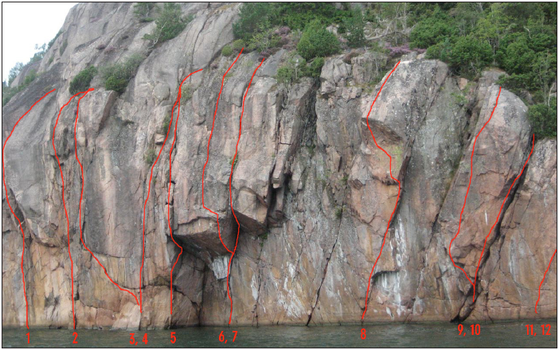

Rödsberget
Lat: 58.25501
Long: 11.25547
Beskrivning
Klippan ligger i Åbyfjorden, mitt emot Sjöhäller. Klippan utvecklades av
under 2007.
Vägbeskrivning
Ligger mitt emot Sjöhäller klippan.
Vägbeskrivning till Sjöhäller. Fortsätt förbi Häller, ca 1km. En åker passeras och vatten till höger en kulle blir synlig. Parkera vid kullens högra fot vid en liten gräsplan. Gå rakt över kullen i sänkan. Berget som vetter mot vatten dyker upp till vänster.
Klippan

- 1
- Airwolf
- 8a S1
- Det lilla taket med den tydliga aretén cirka 15m till vänster om Badkrukan.
- 2
- Projekt
- Projekt
- Sprickan upp till det lilla taket.
- 3
- Ry Ry
- 7a+ S1
- Startar två meter till vänster om Badkrukan. Hangla ca 4m vänster snett uppför sprickan därefter rakt upp i spricksystemet. Tänk på utstickande hyllan under traversen.
- 4
- Projekt, Sprickan 2m till vänster om badkrukan.
- Projekt
-
- 5
- Badkrukan
- 6a S0
- Sprickan längst till vänster i det stora taket. Börjar på aretén på den utskjutande klacken.
- 6
- Projekt 2m till höger om Badkrukan
- Projekt
- Följer den överhängande aretén. Sen vänster ut på den slopiga hyllan.
- 7
- Jellyfish
- 6c S1
- Börjar två meter till höger om Badkrukan. Följ sprickan till toppen.
- 8
- Betongkepsen
- Projekt
- Cirka 10m till höger om badkrukan. Följ diederformationen en bit. Därefter vänster upp under överhänget. Svårt.
- 9
- Flygfisk
- 7b S0
- Cirka 15m till höger om badkrukan. Klättra mitt på den röda skölden snett uppåt höger.
- 10
- Marulk
- 6b S0
- Breda sprickan snett uppåt höger.
- 11
- Lutfisk
- 7b S0
- Lutande sprickan till höger om Marulk.
- 12
- Räkan
- 7c+ S0
- Startar i monot 2m till höger om Lutfisk.
Kategori:DWS
Kategori:Saknar karta
Kategori:Bohuslän